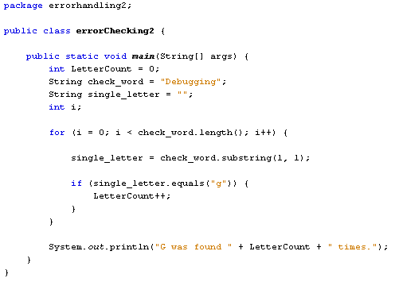
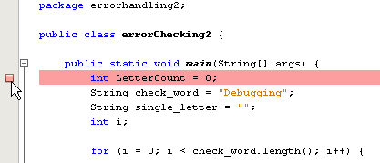
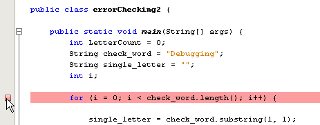
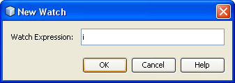
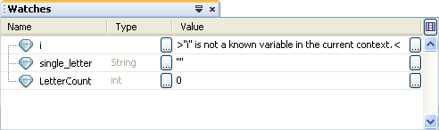
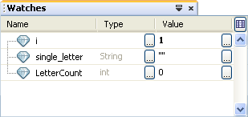

Logic errors are the ones you make as a programmer, when the code doesn't work as you expected it to. These can be hard to track down. Fortunately, NetBeans has some built-in tools to help you locate the problem.
First, examine this code:

Type it out for yourself, using either the programme you already have, or by starting a new project. What we're trying to do here is count how many times the letter "g" occurs in the word "Debugging". The answer is obviously 3. However, when you run the programme the Output window prints:
"G was found 0 times."
So we've made an error somewhere in our code. But where is it? The programme executes OK, and doesn't throw up any Exceptions for us to study in the Output window. So what to do?
To track down problems with your code, NetBeans allows you to add something called a Breakpoint.
Click in the margins of the code window to add a new Breakpoint:

From the NetBeans menu, click Debug > Debug errorhandling2 (or whatever you called your project). NetBeans will jump to the breakpoint. It's has now halted code execution at that point. You should also see a new toolbar appear:
The first three buttons allow you to stop the debugging session, pause, and continue. The next five buttons allow you to step into code, step over code, step out, or jump to the cursor.
You can also press the F5 key to continue. The code should run as normal with the Breakpoint where it is. The debugging session will then end.
When the debugging session ends, click back on the Breakpoint to get rid of it. Now add a Breakpoint to your for loop:

Now click Debug > New Watch. A Watch allows you to keep track of what's in a variable. So type the letter i in the Watch dialogue box and click OK:

Add another Watch and then type single_letter. Click OK. Add a third Watch and type LetterCount. You should these three variables at the bottom of your screen:

Now press the Step Into icon on the toolbar:
Or just press the F7 key on your keyboard. Keep pressing the F7 key and see what happens in the Watch window. You should find that the i variable goes up by 1 each time. But the other two variables stay the same:

Because there's nothing in the single_letter variable then LetterCount can't go beyond zero. So we've found our problem - our use of substring must be wrong, as it's not grabbing any characters.
Stop the debugging session and change your substring line to this:
single_letter = check_word.substring( i, i + 1 );
Now start the debugging session again. Keep pressing the F7 key to go over each line of the for loop. This time you should see the sinle_letter and LetterCount variables change.
When the code ends, you should see the Output window display the following:
"G was found 3 times."
We now have the correct answer.
So if things are not going as planned with your code, try setting a Breakpoint and some Watches for your variables. Then start a debugging session.
In the next section, we'll tackle a different subject altogether: How to open
up text files in Java.